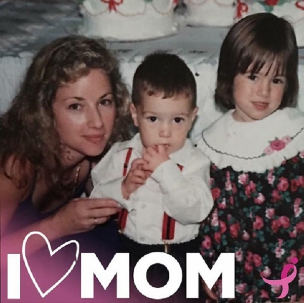
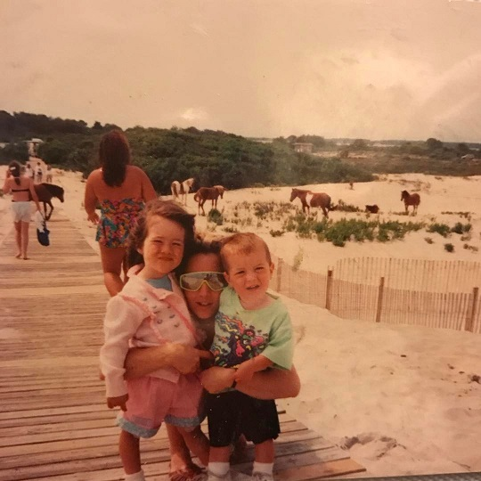
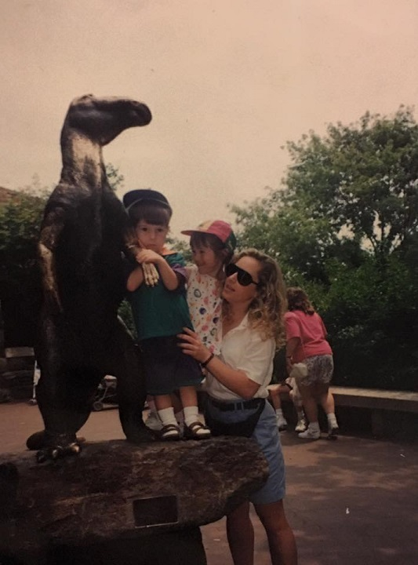
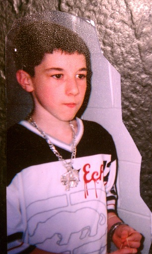

The time and effort spent on this is dedicated to the person who has always loved me the most and longest, my mother.

Credit to my sister for finding these photos and uploading to facebook. Without her, there would be many fewer pictures on facebook, of everyone she knows..

Although I cannot recall this, obviously from my age, it still warms my heart to see my mom looking genuinely happy.

What I learned much later in life is that my mom was at her happiest when she made her children happy. I, like many kids, loved dinosaurs..

I would have spiked hair, orange hair, buzzed hair, "gangsta'" fashion, become The Orange Kid, and later known as Pajama Pants at my local gym. I was, and still am, a very unique, if not weird, person. My mom let me stand out and this taught me many lessons in understanding, acceptance, tolerance, and empathy. My mom allowed me to be myself, much more than other parents let their children, and for that I will be forever grateful.
My mom often comes off as tough, a bit of a hardass, and sometimes heartless to those who don't know her. It does not take long to learn she has a big heart as she always gets suckered into adopting people's pets and cleaning up after them as they become old.. or maybe just lazy.
My mom, as long as I can remember, has told me, "If you ever get yourself arrested, don't expect me to bail your ass out!" Contrary to what that sounds like, she has always been there for me. When I mess up, she's there, maybe also share some deserved criticism to me, but she's still there to help how she can. She was, and still is, a good mom to both her children and her pets.